国际化学生单车租赁管理软件V1.0 是面向高校学生、留学生、管理员和运维人员的校园单车租赁管理软件。系统采用 H5 前端、Node.js 后端和 MySQL 数据库，围绕车辆查询、租赁、归还、订单、维护、公告、后台统计和中英文国际化形成完整业务链路。本文用于说明软件需求、模块结构、总体设计、详细设计、数据库设计、接口设计、运行部署、安全控制和测试验证情况。
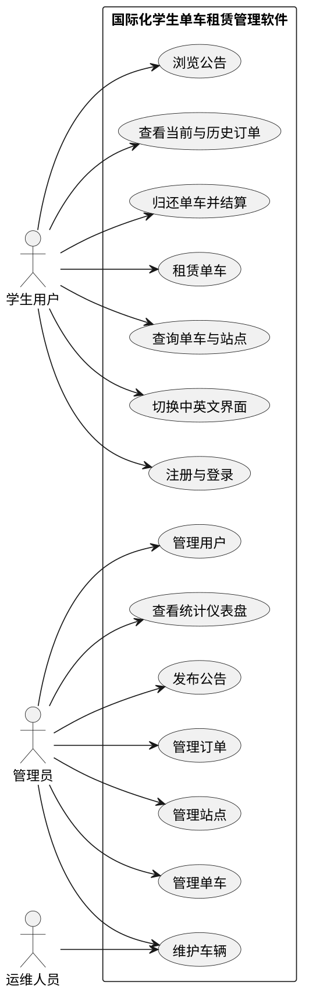
图示说明：该用例图用于把用户需求与系统功能边界对应起来。学生用户对应注册登录、语言切换、车辆查询、租赁、归还、订单和公告等需求；管理员对应后台统计、用户、车辆、站点、订单、公告和维护管理需求；运维人员对应车辆维护和状态更新需求。该图的重点是说明系统围绕三个角色组织权限，不同角色只能进入与职责匹配的功能范围。
系统定位为校园共享单车租赁和运营管理软件。学生端服务于租赁使用，后台端服务于运营管理，运维端服务于车辆维护，数据层服务于用户、车辆、站点、订单、维护和公告的持久化管理。
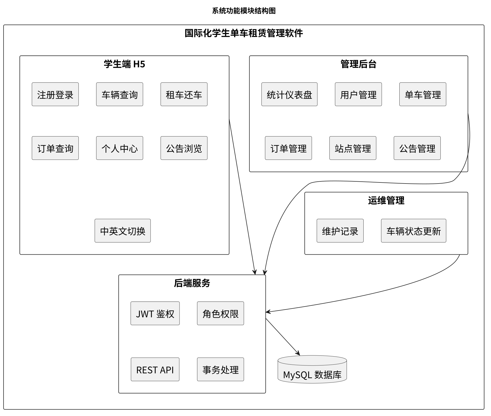
图示说明：该模块图用于说明系统由哪些业务模块组成。学生端 H5 包含注册登录、车辆查询、租车还车、订单查询、个人中心、公告浏览和中英文切换；管理后台包含统计仪表盘、用户管理、单车管理、订单管理、站点管理和公告管理；运维管理包含维护记录和车辆状态更新；后端服务提供 JWT 鉴权、角色权限、REST API 和事务处理；MySQL 数据库保存核心业务数据。该图放在系统概述章节，是为了先给出系统全貌，再进入总体架构和详细流程。
| 模块 | 服务角色 | 对应需求 | 主要页面/接口 | 主要数据表 |
|---|---|---|---|---|
| 用户认证模块 | 学生、管理员、运维 | 登录、注册、身份识别 | 登录页、注册页、/api/auth | users |
| 单车租赁模块 | 学生 | 查询车辆、租车、还车 | 单车列表、车辆详情、租赁确认、当前订单 | bikes、rental_orders |
| 订单查询模块 | 学生、管理员 | 当前订单、历史订单、订单管理 | 当前订单、历史订单、订单管理页 | rental_orders |
| 后台管理模块 | 管理员 | 用户、车辆、站点、公告、统计管理 | 管理员仪表盘和管理列表 | users、bikes、stations、announcements |
| 维护管理模块 | 运维、管理员 | 故障维护、状态恢复 | 维护管理页、/api/maintenance | maintenance_records、bikes |
| 国际化模块 | 所有用户 | 中英文界面、双语公告 | 语言切换、公告列表、公告详情 | announcements、users |
系统采用前后端分离架构。H5 前端负责页面展示、移动端适配、语言切换、表单输入和用户交互；Node.js 后端负责认证、权限、业务规则、统一响应、异常处理、事务和数据库访问；MySQL 负责保存持久化数据。总体设计的重点是把页面展示和业务规则分离，让租车还车等关键逻辑集中在后端执行。
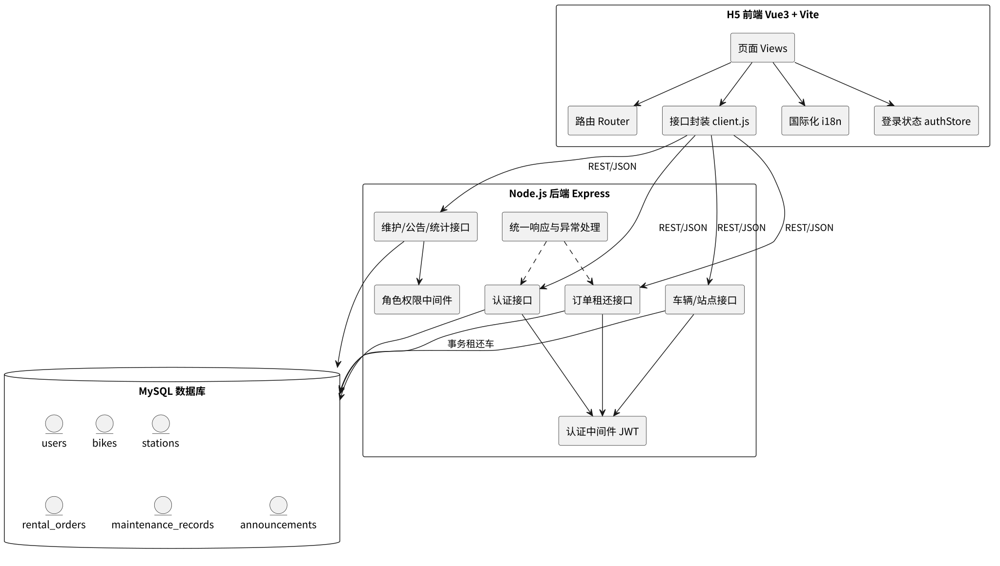
图示说明：该架构图说明前端、后端和数据库的整体分层。前端层包含路由、页面、接口封装、国际化和登录状态管理；后端层包含 JWT 鉴权、角色权限、认证接口、车辆站点接口、订单租还接口、维护公告统计接口和统一响应；数据库层保存用户、车辆、站点、订单、维护记录和公告。该图的重点是说明系统不是静态 H5 页面，而是由前端页面、REST API 和数据库共同组成，核心业务通过后端接口和数据库事务保证一致性。
前端构建产物部署在 Web 前端运行环境中，用户通过移动端浏览器访问；后端运行于 Node.js 服务环境中，向前端提供 RESTful API；MySQL 数据库作为独立数据服务。环境变量中包含端口、JWT 密钥和数据库连接配置，材料中均已脱敏。
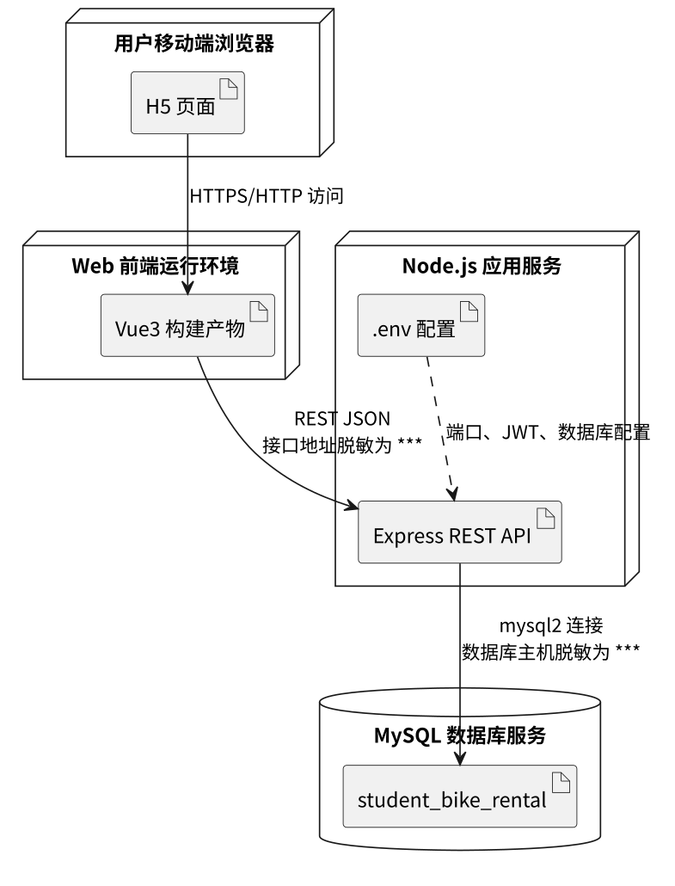
图示说明：该部署图说明软件实际运行时的节点关系。用户移动端浏览器加载 H5 页面，H5 页面访问前端构建产物并通过 REST JSON 调用 Node.js 后端服务，后端再通过 mysql2 访问 MySQL 数据库。该图的重点是明确浏览器、前端静态资源、后端业务服务和数据库服务的职责边界，也说明数据库连接信息、接口地址和主机信息需要通过环境变量配置并在材料中脱敏。
认证模块由注册、登录、个人资料、密码修改和 JWT 校验组成。注册时写入学生账号，登录时后端根据 username 查询 users 表并使用 bcryptjs 比对密码哈希，成功后签发 JWT。前端将 token 保存到 localStorage，并在请求头中携带 Authorization。后端 auth 中间件负责解析 token，role 中间件根据 student、admin、staff 控制访问范围。该设计保证学生不能访问全局用户管理接口，运维人员只能访问维护相关接口，管理员可进入后台全局管理。
租车流程先检查用户是否已有 renting 订单，再锁定车辆记录并判断 bikes.status 是否为 available。满足条件后，后端写入 rental_orders，生成订单编号，记录 start_time、hourly_rate、start_station_id，并把车辆状态改为 rented。还车流程锁定订单，判断订单是否属于当前用户或管理员，计算租赁分钟数并向上取整到小时，写入 duration_hours 和 total_amount，最后将订单状态改为 completed 并恢复车辆为 available。
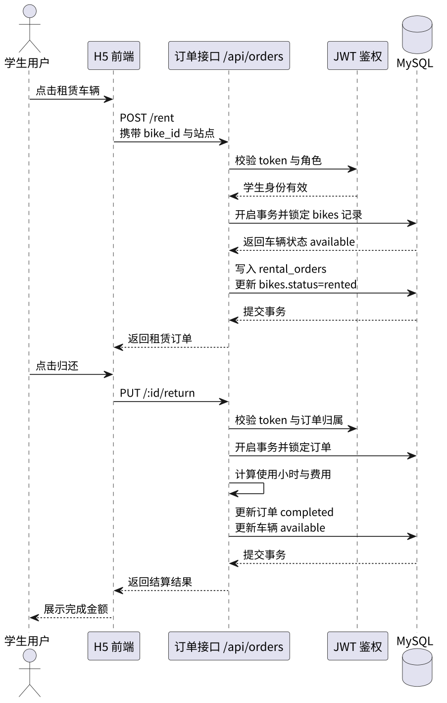
图示说明：该时序图展示学生端、H5 前端、订单接口、JWT 鉴权和 MySQL 数据库之间的调用顺序。租车阶段重点是身份校验、车辆锁定、订单写入和车辆状态占用；还车阶段重点是订单归属校验、时长计算、费用结算、订单完成和车辆释放。该图用于证明系统核心交易流程具备明确的前后端调用链和数据库事务边界，不依赖前端直接修改业务数据。
车辆状态包含 available、rented、maintenance 和 disabled。订单状态包含 renting、completed 和 cancelled。维护状态包含 processing 和 finished。系统通过状态枚举限制业务动作，例如只有 available 车辆可以租赁，只有 renting 订单可以归还，maintenance 车辆不会作为正常可租车辆参与租赁。
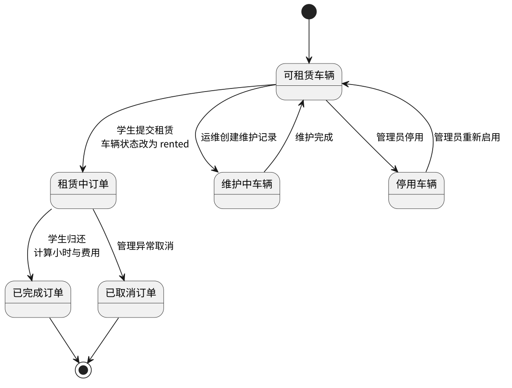
图示说明：该状态图说明订单状态和车辆状态如何联动。学生租赁后车辆由可租赁转为已租赁，订单进入租赁中；学生归还后订单完成，车辆恢复可租赁；运维创建维护记录后车辆进入维护中，维护完成后恢复可租赁；管理员可以停用异常车辆。该图的重点是说明系统通过状态机控制业务可执行条件，避免维护中或停用车辆继续被学生租用。
前端通过 i18n 资源保存中文和英文菜单、按钮、状态、表头和提示文案，用户选择语言后写入 localStorage。公告表同时保存 title_zh、title_en、content_zh 和 content_en，前端根据当前语言展示对应内容。中英文切换不仅影响导航和按钮，也影响后台表头、状态文本和公告内容，保证学生和留学生都能理解主要业务页面。
数据库名称为 student_bike_rental，采用 MySQL 保存业务数据。数据库脚本位于 backend/sql/schema.sql 和 backend/sql/seed.sql，演示数据脚本位于 backend/src/utils/seedDemoData.js。数据库模型围绕用户、站点、车辆、租赁订单、维护记录和公告六类对象设计，通过外键、唯一约束和状态枚举保证业务数据可追溯、可校验。
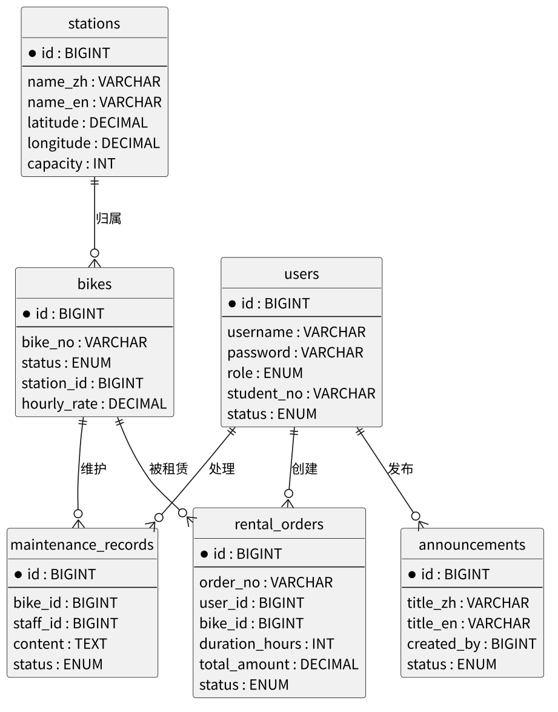
图示说明：该 ER 图说明六张核心表之间的关系。users 表是用户、学生、管理员和运维人员的统一身份来源；stations 表与 bikes 表形成站点到车辆的一对多关系；bikes 表与 rental_orders 表形成车辆到租赁订单的一对多关系；maintenance_records 记录车辆和维护人员之间的处理关系；announcements 记录公告发布人与公告内容。该图重点说明数据库不是孤立表集合，而是围绕校园车辆租赁全过程建立关联。
| 数据表 | 字段名 | 类型与约束 | 中文注释与备注 |
|---|---|---|---|
| users | id | BIGINT；主键，自增 | 用户编号。用户唯一标识，用于关联订单、维护记录和公告发布人。 |
| users | username | VARCHAR(50)；唯一，非空 | 登录账号。学生、管理员和运维人员登录系统时使用。 |
| users | password | VARCHAR(255)；非空 | 密码哈希。保存 bcrypt 哈希后的密码，不保存明文密码。 |
| users | role | ENUM；student/admin/staff | 用户角色。区分学生、管理员和运维人员权限边界。 |
| users | language | VARCHAR(20)；默认 zh-CN | 默认语言。记录用户偏好的中文或英文界面语言。 |
| stations | id | BIGINT；主键，自增 | 站点编号。校园站点唯一标识。 |
| stations | name_zh/name_en | VARCHAR(120)；非空 | 站点中英文名称。用于在中文和英文界面展示站点名称。 |
| stations | latitude/longitude | DECIMAL；可空 | 站点经纬度。用于描述站点地理位置和后续地图扩展。 |
| stations | capacity | INT；默认 0 | 站点容量。表示站点可容纳车辆规模。 |
| bikes | id | BIGINT；主键，自增 | 车辆主键。单车数据唯一标识。 |
| bikes | bike_no | VARCHAR(60)；唯一，非空 | 车辆编码。面向运营和学生展示的车辆编号。 |
| bikes | status | ENUM；available/rented/maintenance/disabled | 车辆状态。控制车辆是否可租、已租、维护中或停用。 |
| bikes | station_id | BIGINT；外键，可空 | 所属站点。关联 stations，表示车辆当前归属站点。 |
| bikes | hourly_rate | DECIMAL(10,2)；默认 2.00 | 小时费率。租车计费时使用的每小时价格。 |
| rental_orders | order_no | VARCHAR(80)；唯一，非空 | 订单编号。租赁订单的业务编号。 |
| rental_orders | user_id | BIGINT；外键，非空 | 租赁用户。关联 users，表示订单归属学生。 |
| rental_orders | bike_id | BIGINT；外键，非空 | 租赁车辆。关联 bikes，表示订单对应车辆。 |
| rental_orders | start_time/end_time | DATETIME；开始时间非空 | 起止时间。用于计算租赁时长和还车结算。 |
| rental_orders | duration_hours | INT；可空 | 使用小时数。归还时按不满一小时算一小时写入。 |
| rental_orders | total_amount | DECIMAL(10,2)；默认 0 | 订单金额。保存归还结算后的总费用。 |
| maintenance_records | bike_id | BIGINT；外键，非空 | 维护车辆。关联需要维护的车辆。 |
| maintenance_records | staff_id | BIGINT；外键，可空 | 维护人员。关联执行维护的运维人员或管理员。 |
| maintenance_records | content | TEXT；非空 | 维护内容。记录故障、检查和维修说明。 |
| maintenance_records | status | ENUM；processing/finished | 维护状态。表示维护处理中或已完成。 |
| announcements | title_zh/title_en | VARCHAR(200)；非空 | 公告中英文标题。用于中文和英文公告列表展示。 |
| announcements | content_zh/content_en | TEXT；非空 | 公告中英文内容。用于公告详情双语展示。 |
| announcements | status | ENUM；published/hidden | 公告状态。控制公告是否展示给用户。 |
schema.sql 创建数据库和核心表；seed.sql 写入基础站点、车辆和公告；seedDemoData.js 写入多角色用户、多车型车辆、维护记录和历史订单。users.username、bikes.bike_no、rental_orders.order_no 采用唯一约束；rental_orders 的 user_id 和 status 建立组合索引，用于快速检查当前用户是否已有租赁中订单。租车和还车接口使用事务，防止订单写入成功但车辆状态未更新，或车辆恢复但订单金额未写入的问题。
系统接口以 /api 为统一前缀，包含 /api/auth、/api/users、/api/bikes、/api/stations、/api/orders、/api/maintenance、/api/announcements 和 /api/dashboard 等模块。所有接口统一返回 code、message、data 结构，错误由统一异常处理中间件处理。
认证接口负责注册、登录、个人信息和密码修改；车辆接口负责车辆列表、详情、新增、编辑和停用；站点接口负责校园站点维护；订单接口负责我的订单、当前订单、租车和还车；维护接口负责维护记录查询、创建和完成；公告接口负责公告列表、详情、发布、编辑和隐藏；统计接口负责管理员仪表盘数据。租赁接口 POST /api/orders/rent 和归还接口 PUT /api/orders/:id/return 是系统核心业务接口。
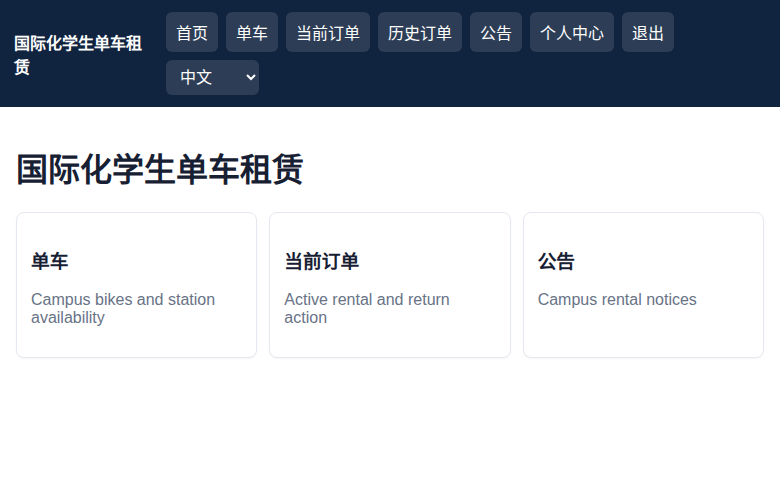
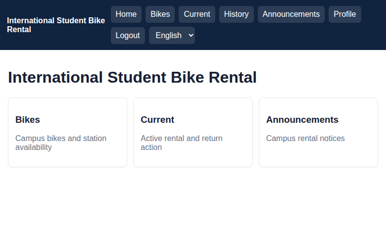
截图说明：该组截图展示学生登录后首页的中文和英文界面对照。左侧为中文界面，右侧为英文界面，二者使用同一套路由和后端数据，只通过前端语言状态切换菜单、按钮和功能入口文案。该页面重点体现学生端常用入口，包括单车、当前订单、历史订单、公告和个人中心，说明系统面向国内学生和国际学生提供一致的功能结构。
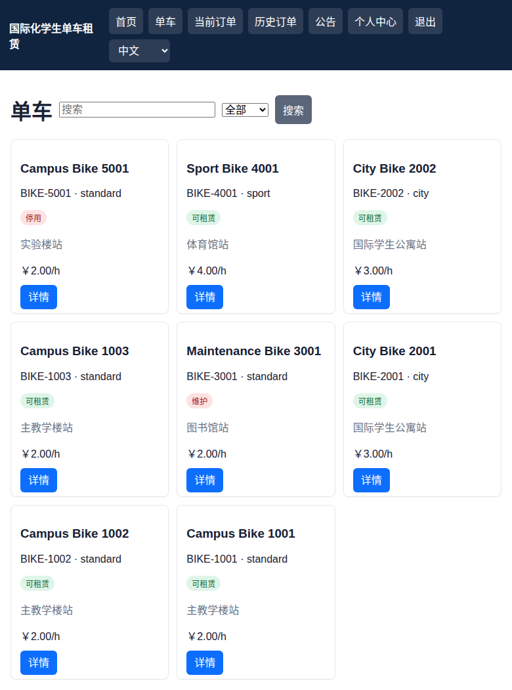
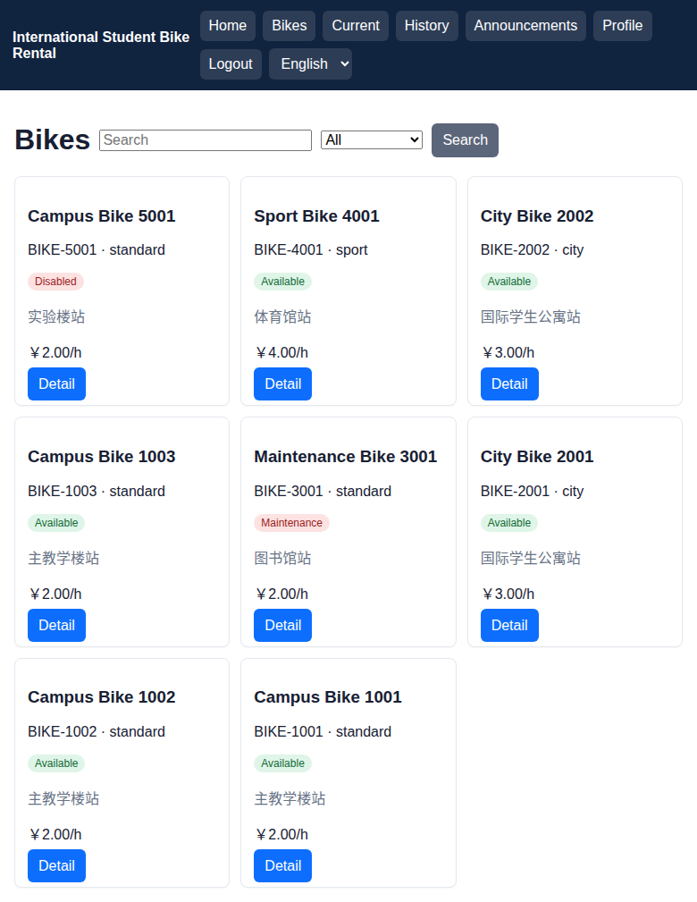
截图说明：该组截图展示单车列表的中文和英文界面对照。列表页面提供搜索、状态筛选、车辆卡片、站点名称、车辆价格和详情入口。中英文界面对照说明国际化不仅应用在顶部导航，也应用在筛选选项、状态文本和操作按钮。该页面对应车辆查询需求，后端数据来自 bikes 和 stations 表。
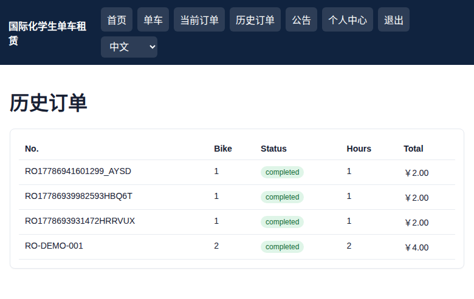
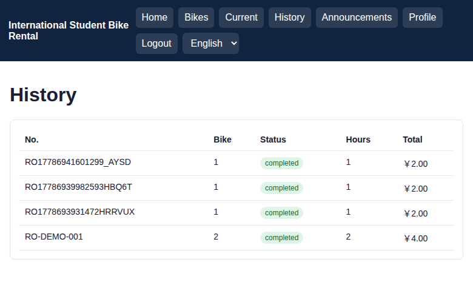
截图说明：该组截图展示学生历史订单页的中文和英文界面对照。页面通过当前登录用户的 token 查询本人订单，展示订单编号、车辆、状态、小时数和费用。中英文对照用于说明系统在订单查询场景下也保持相同业务数据和不同语言界面，重点体现订单数据隔离、费用留存和国际化展示能力。
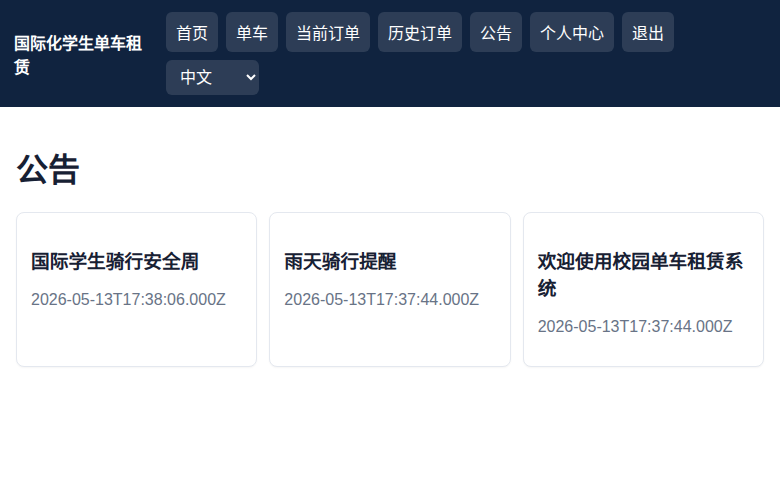
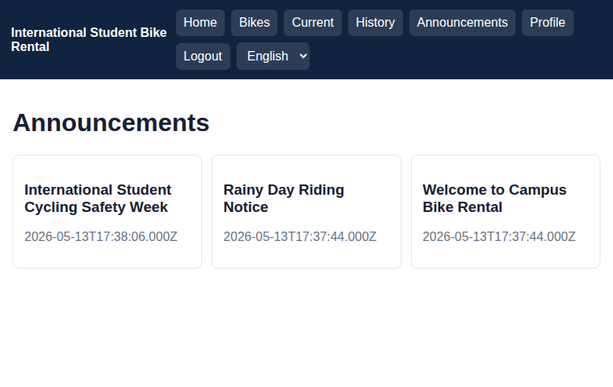
截图说明：该组截图展示公告列表的中文和英文界面对照。公告模块的数据表保存中英文标题和中英文内容，前端根据语言状态选择展示对应字段。该页面重点说明系统可以向中文用户和英文用户同步发布校园骑行规则、运营提醒和安全通知，是国际化校园服务的重要组成部分。
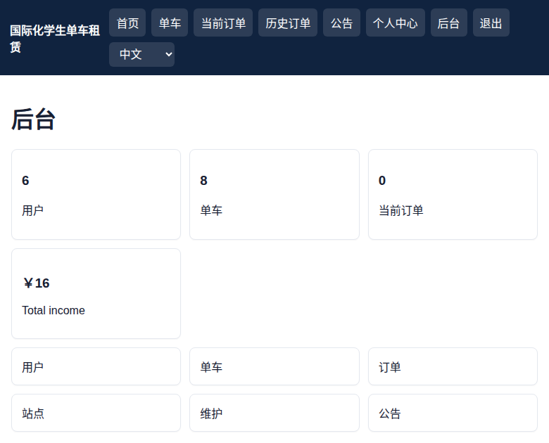
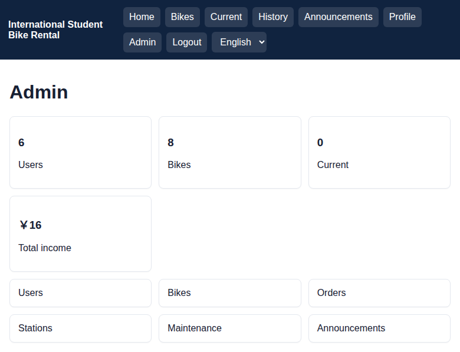
截图说明：该组截图展示管理员统计仪表盘的中英文界面对照。页面显示用户数量、车辆数量、当前租赁订单数量和总收入，并提供各管理模块入口。该页面重点说明管理员可以通过同一后台在不同语言环境下掌握运营状态，统计数据来自后端 dashboard 接口对用户、车辆和订单表的聚合。
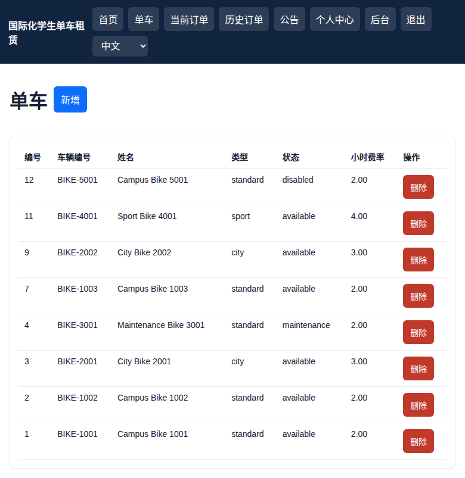
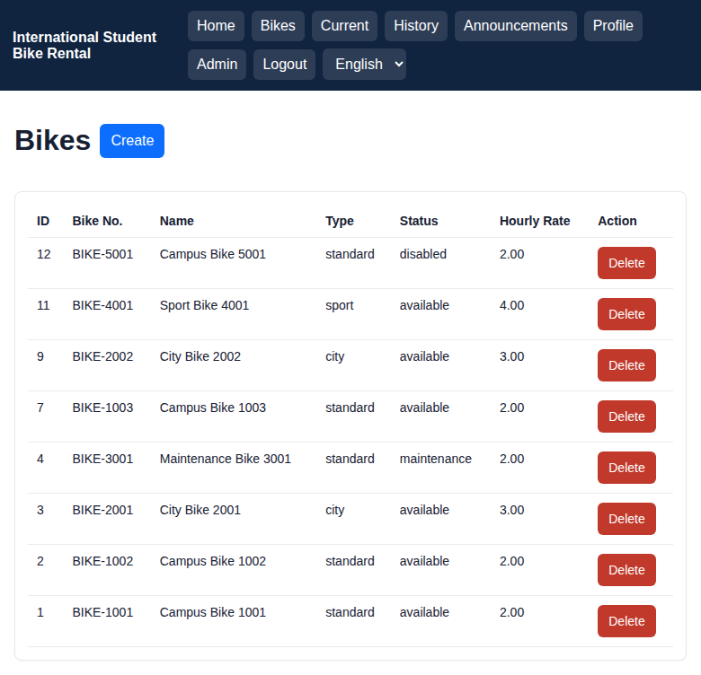
截图说明：该组截图展示管理员单车管理页面的中文和英文界面对照。页面列出车辆编号、名称、类型、状态、小时费率和操作按钮，支持管理员维护车辆资产。该页面重点说明车辆主数据在后台可集中管理，车辆状态会直接影响学生端是否可租赁，是连接后台资产管理和学生租赁体验的关键页面。
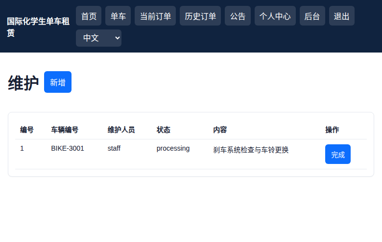
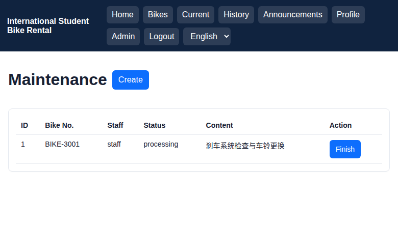
截图说明：该组截图展示维护管理页面的中文和英文界面对照。页面显示维护车辆、维护人员、处理状态、维护内容和完成操作。该页面重点说明系统支持车辆运维闭环，创建维护记录后车辆进入维护中，完成维护后恢复可租赁，从而保证车辆安全和可用性。
后端通过 .env 读取服务端口、JWT 密钥和数据库配置，文档中连接地址和密钥已脱敏。初始化数据库时执行 schema.sql 创建表结构，再执行 seed.sql 和 seed:demo 脚本写入测试数据。前端使用 Vite 启动开发服务，也可以通过 npm run build 生成静态构建产物部署到 Web 服务中。
系统采用 JWT 保持登录状态，服务端通过 auth 中间件验证 token，通过 role 中间件限制角色访问。密码在写入数据库前进行哈希处理。数据库访问使用 mysql2 参数化查询，租赁和归还等关键操作使用事务避免状态不一致。软著材料中的数据库主机、密钥、接口访问地址、账号联系信息等均已脱敏。
本次验证完成了数据库初始化、演示数据写入、学生登录、车辆列表查询、租车、当前订单查询、还车、历史订单查询、管理员登录、统计接口和用户列表接口。前端通过浏览器完成学生登录、车辆详情、租赁确认、归还确认、中英文切换和后台页面访问验证。前端生产构建通过，后端入口模块加载通过，核心链路可运行。
国际化学生单车租赁管理软件V1.0 已实现学生端租赁闭环、管理员后台管理、运维维护记录、公告发布、中英文界面展示、数据库持久化和可部署运行能力，具备校园学生单车租赁软件的主要功能。